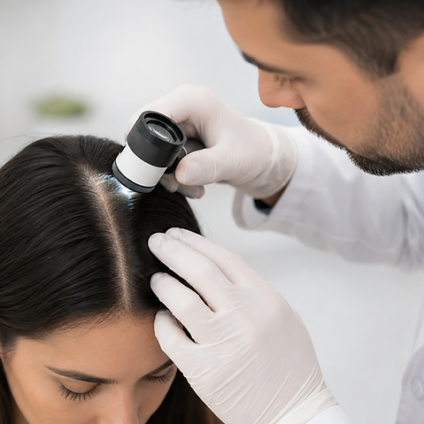

Mi objetivo: cuidar la salud capilar y conseguir resultados naturales, proporcionados y duraderos.
Tricología y
cirugía capilar con criterio médico.
Diagnóstico médico riguroso, microcirugía folicular FUE de máxima precisión y tratamientos médicos avanzados en Madrid, guiados en cada etapa por el Dr. Nicolás de Vicente Muñoz.
Cada paciente y cada alopecia son diferentes. Por eso, antes de plantear un tratamiento, es necesario entender qué está ocurriendo. El diagnóstico permite definir una estrategia personalizada y decidir qué opción es realmente adecuada para cada caso.
01
Diagnóstico médico
Valoración individualizada de la salud capilar y del tipo de alopecia.
Tricoscopia digital de alta resolución
Estudio diferencial del tipo de alopecia
Evaluación de la densidad donante
02
Plan personalizado
Tratamiento adaptado a las necesidades y objetivos de cada paciente.
Selección de la terapia más indicada
Diseño quirúrgico armónico y natural
Expectativas reales basadas en evidencia
03
Seguimiento
Acompañamiento médico durante todo el proceso.
Revisiones periódicas con el cirujano
Control fotográfico evolutivo
Optimización continua de resultados
Soluciones Médicas y Quirúrgicas
TRATAMIENTOS
Cada caso necesita un enfoque diferente. Conoce las opciones de tratamiento y descubre cuál puede ser la más adecuada para ti.

Diagnóstico y Terapia Médica
TRICOLOGÍA
Diagnóstico y tratamiento médico de la alopecia y otras alteraciones del cabello y cuero cabelludo.
Médico Especialista en Tricología & Cirugía Capilar
Vocación y Rigor Quirúrgico
Sobre mí
“La cirugía capilar y la tricología médica no consisten simplemente en colocar pelo, sino en comprender profundamente la fisionomía, la biología del folículo y las expectativas de cada persona para devolver la confianza con resultados 100% naturales.”
El Dr. Nicolás de Vicente Muñoz es médico colegiado dedicado de forma exclusiva a la patología capilar, el diagnóstico tricológico y la microcirugía de trasplante capilar mediante técnica FUE zafiro en Madrid.
Su práctica clínica se fundamenta en la transparencia, el criterio estrictamente médico y el trato cercano sin presiones comerciales. En su consulta, cada diagnóstico es honesto: solo se proponen intervenciones cuando están médica y estéticamente justificadas, garantizando una protección integral de la zona donante para el presente y el futuro del paciente.
Colegiado Oficial
Médico colegiado en el Ilustre Colegio Oficial de Médicos de Madrid.
Especialización Médica
Formación especializada continua en Tricología avanzada y técnica FUE.
Opiniones Verificadas
La experiencia de nuestros pacientes
La confianza, cercanía y resultados alcanzados reflejados en las palabras de quienes nos eligen.
★★★★★
“Mi experiencia con el Dr. Nicolás ha sido excelente. Destacaría especialmente su cercanía, el trato personalizado y la confianza que transmite durante todo el proceso.”
ID
I.DB.
Madrid · Paciente verificado
★★★★★
"Nicolás demuestra con sus acciones su implicación con el paciente para que los tratamientos sean acordes y no falte de nada."
AB
A.B.C.
Madrid · Paciente verificado
★★★★★
"La metodología es muy clara y los resultados son naturales. Es una clínica de alto nivel que valora la salud capilar de forma integral."
EG
Elena G.
Valencia · Paciente verificada
Divulgación y Salud Capilar
Blog & Artículos Médicos
Información científica clara sobre prevención, trasplante y mantenimiento folicular.
Tricología Médica · 4 min de lectura
Mitos y verdades del trasplante capilar FUE
Despejamos las dudas más frecuentes sobre el postoperatorio, el crecimiento real del folículo trasplantado y la importancia del diseño anatómico de la línea frontal.
¿Cómo actuar ante las primeras señales de alopecia?
La miniaturización del cabello es reversible si se detecta a tiempo mediante tricoscopia. Conoce cuándo es el momento óptimo para acudir a consulta médica.